<mat-toolbar color="primary" class="toolbar">
  <div class="superior">
    <div class="titulo-back">
      <mat-icon> <a href="login" class="button-back"> arrow_back</a></mat-icon>
      <span class="text-top">Copa Mundial de la FIFA Catar 2022™</span>
    </div>
    <a href="login" class="LogOut"><button mat-button>Log In</button></a>
  </div>

  <div class="inferior">
    <a href="partidos"><button mat-button>PARTIDOS</button></a>
    <a href="jugadores"><button mat-button>JUGADORES</button></a>
    <a href="estadisticas"><button mat-button>ESTADISTICAS</button></a>
   <a href="posiciones"><button mat-button>POSICIONES</button></a>
  </div>
  <div class="button-responsive">
    <button (click)="menuResponsive()">
      <mat-icon class="menu">menu</mat-icon>
    </button>
  </div>
</mat-toolbar>
<mat-toolbar class="toolbar-responsive">
  <div class="menu-responsive">
    <div class="button-close">
      <button (click)="closeResponsive()"><mat-icon>close</mat-icon></button>
    </div>
    <div class="logo">
      
    </div>
    <div class="menu">
      <a href="partidos"><button mat-button>PARTIDOS</button></a>
      <a href="jugadores"><button mat-button>JUGADORES</button></a>
      <a href="estadisticas"><button mat-button>ESTADISTICAS</button></a>
      <a href="posiciones"><button mat-button>POSICIONES</button></a>
    </div>    
  </div>
</mat-toolbar>
<router-outlet></router-outlet>